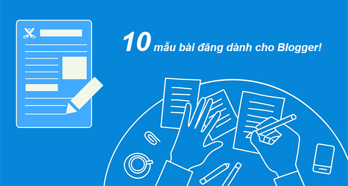

10 mẫu viết dành cho blogger - Lưu lại và dùng cả đời
Các trang web bạn nên tham khảo : Xin vui lòng click vào đây.

Tác giả : Nguyễn Thanh Toàn
Blog là gì?
Blog được coi là một cuốn nhật ký online hay website thông tin cá nhân. Các nhân hoặc nhóm nhỏ có thể chia sẻ mọi thông tin, chủ đề ,kiến thức, trải nghiệm,… dưới góc nhìn chủ quan. Đa phần blog trình bày các bài viết mới nhất lên đầu trang.
Ngoài ra, Blog gọi tắt của weblog (tiếng Anh) hay nhật ký web, một dạng nhật ký trực tuyến được biết đến rộng rãi từ cuối thập niên 1990. Hiện nay blog phát triển rất phổ biến và ai cũng có thể tạo ra một blog cá nhân dành cho riêng mình.
(Nội dung của một blog sẽ chứa văn bản, hình ảnh, link, hình ảnh, video,… Một blog thường thể hiện cái nhìn chủ quan về một chủ đề yêu thích. Tuy nhiên, những định nghĩa blog là gì và website là gì đang ngày càng bị nhầm lẫn nhiều. Bạn sẽ được hiểu hơn ở các phần dưới đây của bài viết)